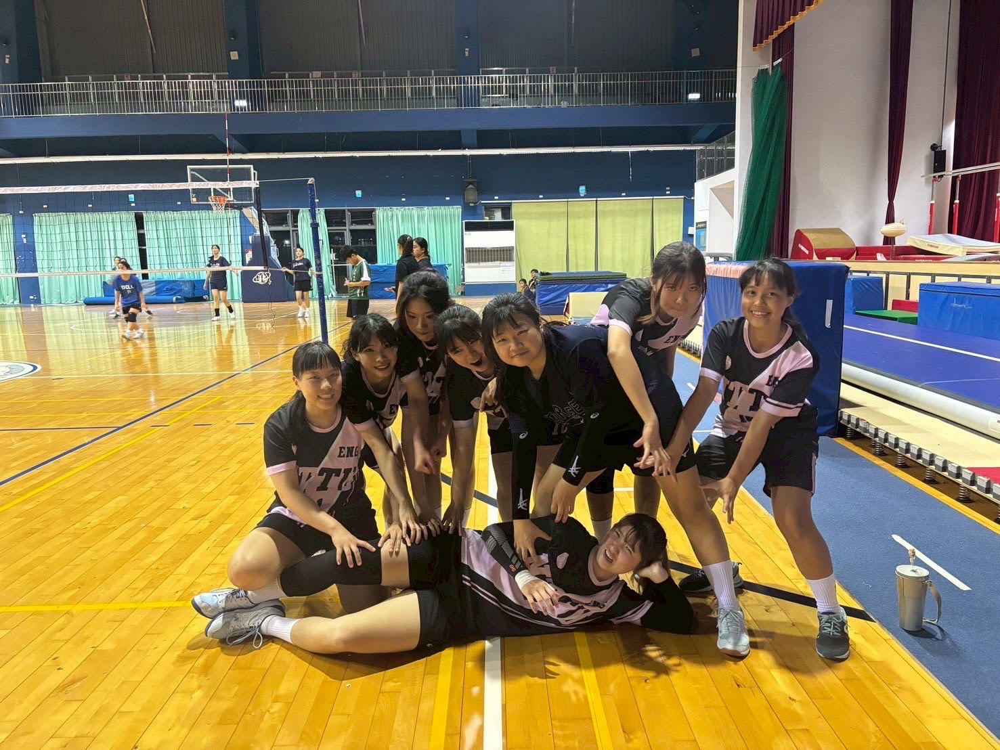

Kelly's 履歷表
自我介紹
您好，我叫林楷芸。正在就讀國立台東大學英美語文學系。我的特質是對任何事都保有好奇心與熱忱並且熱心助人。
學歷
國立台東大學 英美語文學系 (2023至今)
桃園市立南崁高中 (2020 - 2023)
打工經歷
Häagen-Dazs - 內用外帶店服務生 (2023/06 - 2023/08)
漁采時令料理 - 餐廳服務生 (2024/04 - 2024/12)
安吉利美語補習班 - 助教老師 (2024/09至今)
參與活動
大學校內英美系排
曾獲得榮譽 / 獎項
校內系排系際盃女子組冠軍

興趣
攝影、剪片
打排球
研究美妝新知識